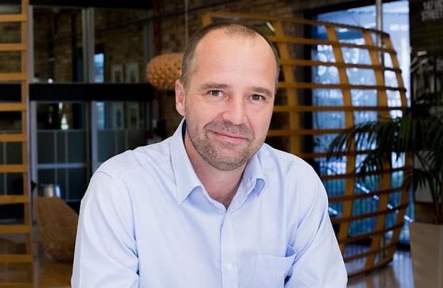

Executive Synthesis: Prabhas' Spirit and Fauji news, a Telugu concert in San Ramon and Sid Sriram in Los Angeles join a day of LLM-judge testing, the Denisovans, and a Jio IPO subscribed 5.5 times.
Local and Travel
In the South Bay: Jim Henson's Labyrinth in concert at San Jose Civic, the Quicksilver History Hike on Sunday 25 October, and SPARK Social, now open downtown. On deals, the Pixel 10 Pro XL was $849 on Amazon as of 19 October, and Mint Mobile's $399 Pixel 11 offer with a year of service ends today and was reported out of stock. New Zealand tourism hit record arrivals from Australia.
South Bay this week
| Visit San Jose: | Oct 9 · 2m |
 Jim Henson's Labyrinth: In Concert, tonight at San Jose Civic
—
Thursday 22 October, 8:00 PM at San Jose Civic (135 West San Carlos Street). The 1986 film plays on a large HD screen while a live band performs the full soundtrack, including David Bowie's songs, as part of a 40th-anniversary North American tour. Costumes and singing along are encouraged. Tickets are sold through Ticketmaster, and the listing advises confirming details with the box office.
Jim Henson's Labyrinth: In Concert, tonight at San Jose Civic
—
Thursday 22 October, 8:00 PM at San Jose Civic (135 West San Carlos Street). The 1986 film plays on a large HD screen while a live band performs the full soundtrack, including David Bowie's songs, as part of a 40th-anniversary North American tour. Costumes and singing along are encouraged. Tickets are sold through Ticketmaster, and the listing advises confirming details with the box office.
Takeaway: A film-with-live-music night in downtown San Jose that fits your concerts-and-things-to-do interest, with a ticket still reachable tonight.
| Santa Clara County Parks: | today · 2m |
Takeaway: A guided, moderate hike in a county park close to San Jose, matching your outdoors and hiking interest.
| SPARK Social: | Oct 12 · 3m |
Takeaway: A casual food-truck, bar and putt-putt spot in downtown San Jose for an easy group outing near home.
Trips and flights
| Karryon: | today · 2m |

New Zealand hits record arrivals from Australia as global visits near 2019 level — New Zealand received 3.7 million international visitors in the year to August, up 9% year on year and 95% of 2019 levels; August alone reached 99% of the same month in 2019. Australian arrivals hit a record 125,600. Tourism New Zealand has started a multi-year Expedia campaign aimed at the US, Canada, UK and Australia, and the cruise season began this month with 642 port calls expected.
Takeaway: New Zealand is one of the trips on your list; recovering demand and a US-targeted campaign are useful context for timing and booking.
Deals and gear
| Android Authority: | 3 days ago · 2m |
Pixel 10 Pro XL drops to $849 on Amazon, matching its all-time low
—
Amazon has the Pixel 10 Pro XL at $849, down from its $1,199 list price, a $350 (29%) saving that Android Authority says returns it to its all-time low. The phone has a 6.8-inch 120Hz OLED, Tensor G5, 16GB RAM and a 5x telephoto camera, and the listing mentions a bundled year of Google AI Pro. Check the exact configuration and checkout price before buying.
Takeaway: Matches your Pixel and Android gear watch, and the bundled Gemini subscription touches your AI-subscription interest.
| 9to5Google: | 2 days ago · 2m |
Mint Mobile: Pixel 11 at $399 with a year of service, plus $10/month plans ending today
—
Mint has two offers. Any plan is $10/month for the first six months, ending October 22. Separately, Pixel prices are cut when you prepay 12 months of service: Pixel 11 $399 (was $899), Pixel 10 Pro $429, Pixel 11 Pro $594, Pro XL $794. The $399 Pixel 11 was out of stock at publication; the 512GB model and Pixel 10 Pro deals were still available.
Takeaway: A Pixel-focused deal from your Android watch list, with the Pixel 10 Pro price notable for camera hardware.
| AI Plan Tracker: | today · 3m |
Cursor Teams drops its $0.25/M token rate on smaller third-party models
—
A pricing change log dated 2026-10-21 reports that Cursor's pricing docs now list models excluded from the $0.25 per million token Cursor Token Rate, including Claude Haiku 5.5, Gemini 3 Flash, GPT-5 Mini and GPT-5.6 Luna. It applies to Teams and Enterprise only; individual plans do not pay the rate. The same log notes Cursor's new plan structure from October 12.
Takeaway: Directly relevant to your tracking of Cursor and AI coding-tool pricing and usage limits.
Watch
| Out of Office Tales: | 3 days ago · 40m |
48-hrs in Vienna, Capital of Austria (Europe) | Places to visit, Food and Hidden gems
—
A 48-hour Vienna itinerary covering main sights, food and lesser-known spots, useful for sketching a short city visit.
Takeaway: Practical guide for Vienna, on your travel list.
| Surf on Sofa: | 6 days ago · 9m |
15 Things to Know Before You Visit Paris (2026)
—
Fifteen practical tips for visiting Paris in 2026, covering what to know before arrival.
Takeaway: Practical Paris trip tips for your travel list.